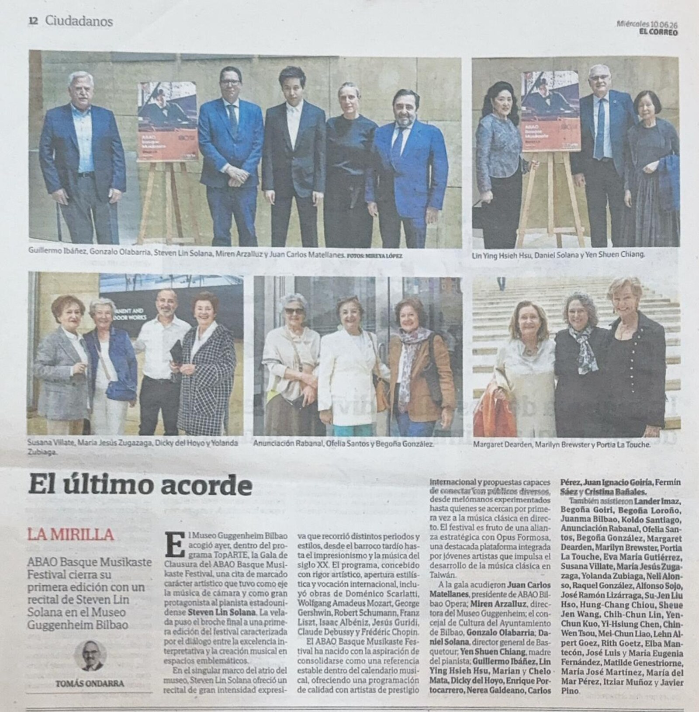
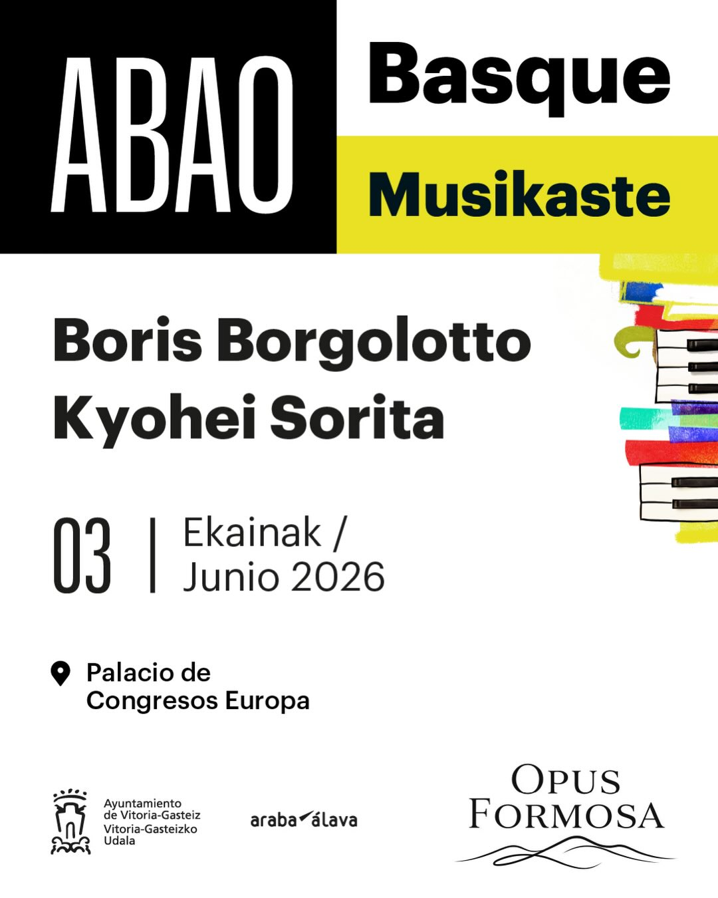
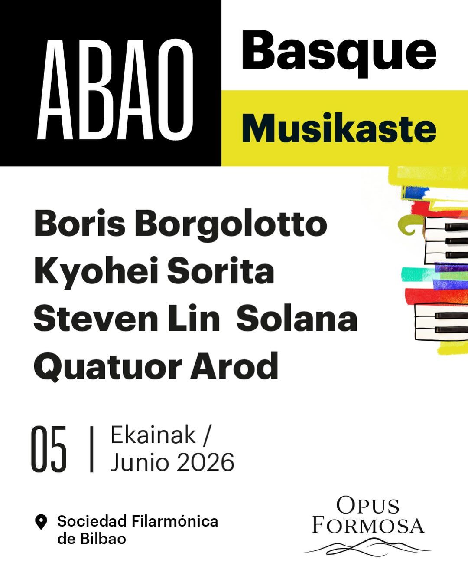
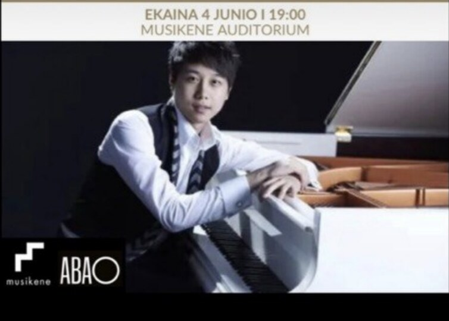
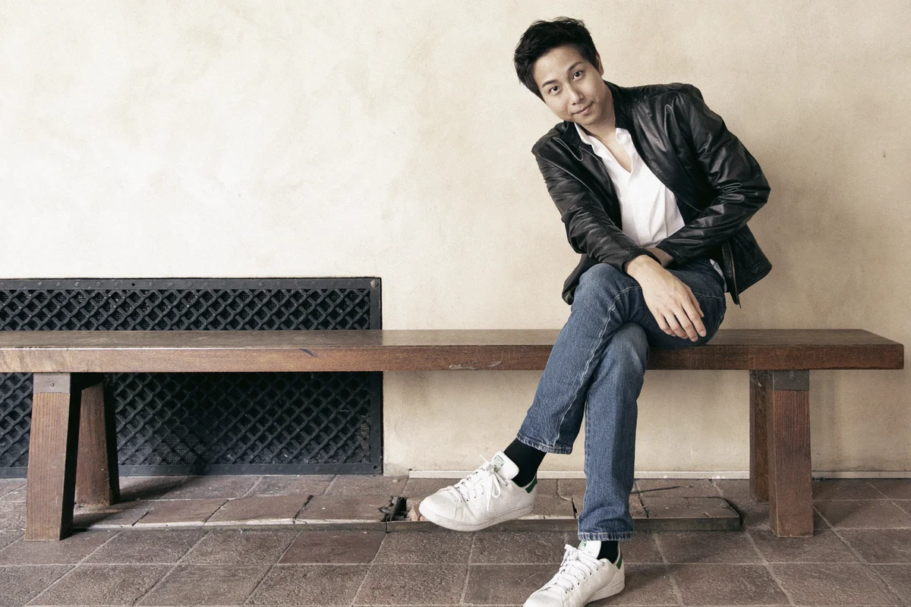
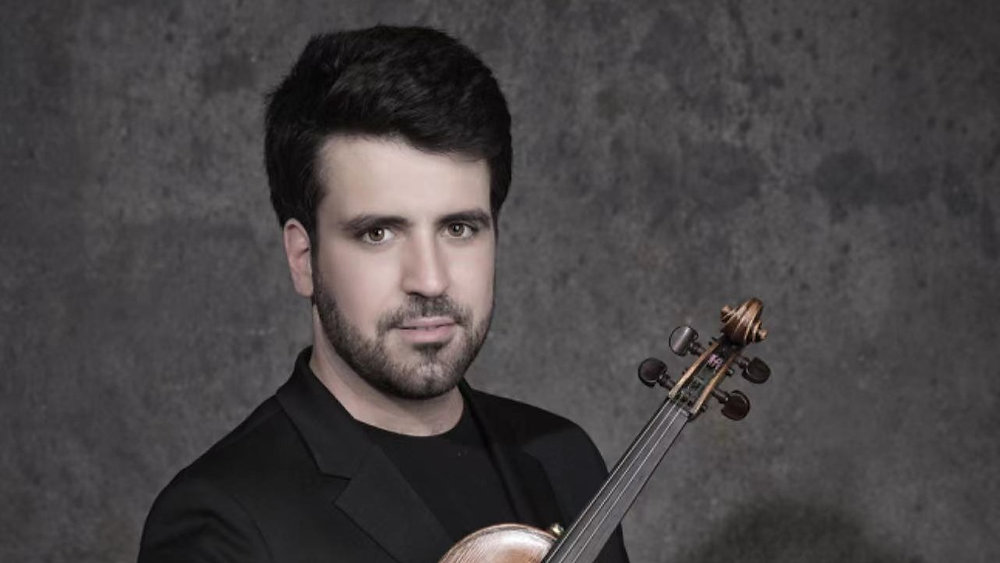
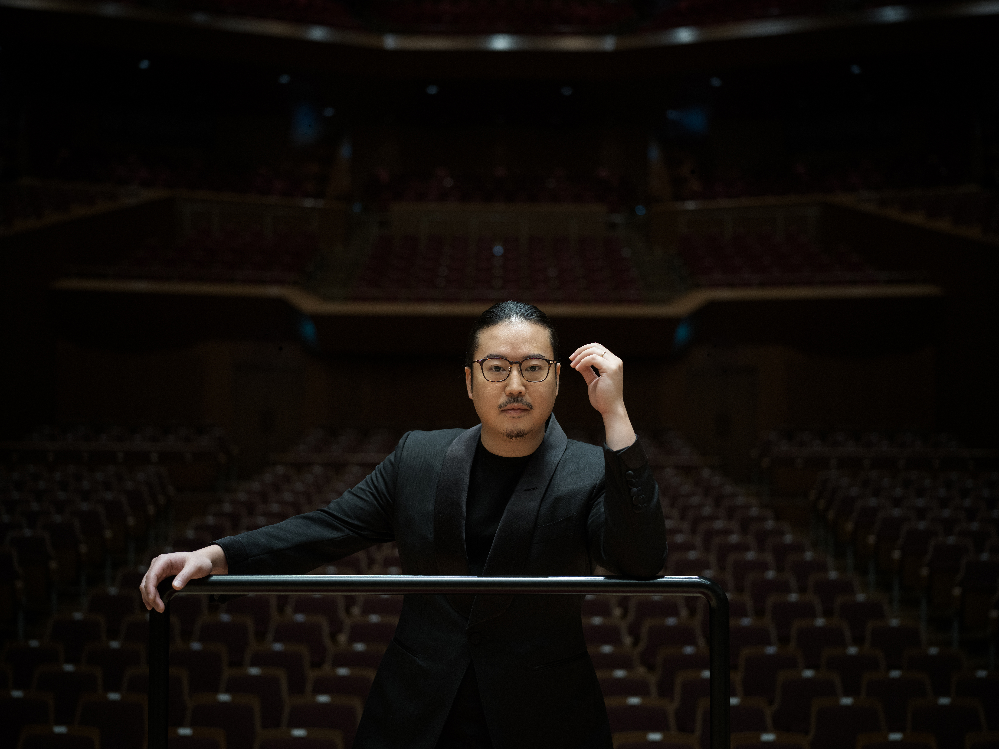

由 ABAO 畢爾包歌劇院 與 Opus Formosa 共同呈獻的全新音樂節。我們將世界級藝術帶進巴斯克之心，並與 畢爾包古根漢美術館 等指標機構緊密合作，打造一週難忘的音樂盛宴。
閱讀完整活動報導 ↗願景攜手：ABAO 畢爾包歌劇院與 Opus Formosa
畢爾包音樂週是 ABAO 畢爾包歌劇院 與 Opus Formosa 策略聯盟的首屆成果。我們結合 ABAO 在歐洲歌劇傳統中的深厚根基，與 Opus Formosa 將世界級藝術推向國際的使命，打造一場既紮根在地、又面向國際的音樂節。
合作不止於舞台。透過與 畢爾包古根漢美術館、Musikene、畢爾包愛樂協會 等文化重鎮的緊密合作，我們將音樂織入巴斯克的建築與人文脈絡。這不只是一系列音樂會，更是一場文化對話——把全球頂尖藝術家帶到世上最具活力的藝術地區之一。
媒體聚焦
《El Correo》全版專題報導

《El Correo》2026 年 6 月 10 日 · 第 12 版
巴斯克自治區發行量最大的報紙 《El Correo》 以「El último acorde（最後的和弦）」為題，全版專題報導 ABAO Basque Musikaste 音樂節閉幕之夜，並特別介紹音樂節背後 ABAO 與 Opus Formosa 的策略合作。
閉幕音樂會於 畢爾包古根漢美術館 舉行，雲集眾多巴斯克文化與政府要員：
- · Juan Carlos Matellanes ABAO 畢爾包歌劇院總裁
- · Miren Arzalluz 畢爾包古根漢美術館館長
- · Gonzalo Olabarria 畢爾包市政府文化局局長
- · Daniel Solana 巴斯克觀光局（Basquetour）局長
藝術總監 林易 與 Opus Formosa 團長一同出席，共同見證這場跨國文化合作的重要時刻。
閱讀完整報導 ↗演出場次

6 月 3 日（三）19:30
ABAO Basque Musikaste Vitoria
Sala María de Maeztu
Palacio de Congresos Europa，維多利亞‑加斯泰茲
曲目
- 蕭邦 — 四首詼諧曲
- 布拉姆斯 — 第一號小提琴奏鳴曲
- 葛利格 — 第二號 G 大調小提琴奏鳴曲，Op. 13

6 月 5 日（五）19:30
ABAO Basque Musikaste Bilbao
Sociedad Filarmónica de Bilbao，畢爾包
曲目
- 蕭頌 — D 大調小提琴、鋼琴與弦樂四重奏協奏曲，Op. 21
- 德弗札克 — A 大調第二號鋼琴五重奏，Op. 81

6 月 4 日（四）19:00
林易鋼琴獨奏會
Musikene，聖塞巴斯提安
曲目
- 莫札特 — 《小星星變奏曲》（「Ah vous dirais-je, Maman」十二段變奏），K. 265
- 蕭邦 — 升 C 小調馬祖卡，Op. 50 No. 3
- 阿爾班尼士 — 選自《西班牙組曲》第一號，Op. 47：III.《塞維利亞》
- 蓋希文 — 選自《歌曲集》：《我愛的人》
- 貝多芬 — C 大調第 21 號鋼琴奏鳴曲，Op. 53《華德斯坦》
- 中場休息
- 史卡拉第 — D 小調奏鳴曲，K. 9
- 莫札特 — D 小調第三號幻想曲，K. 397
- 李斯特 — 《唐璜的回憶》，S. 418
演出陣容

鋼琴 · 藝術總監
林易
Steven Lin
台灣旅美鋼琴家，Opus Formosa 創辦人與藝術總監。足跡遍及北美、歐洲與亞洲，致力於連結跨國界的台灣音樂家，推動古典音樂在台灣的發展。
stevenlinpiano.com ↗
小提琴
Boris Borgolotto
法國小提琴家，以生動感性的詮釋與卓越舞台魅力廣受矚目，榮獲紐約 IBLA 基金會國際大賽首獎。足跡遍及卡內基音樂廳、巴黎愛樂廳、威格摩爾音樂廳與阿姆斯特丹音樂廳，曾與 Myung-Whun Chung、Ton Koopman 及 Joe Hisaishi 等世界級指揮合作演出。

鋼琴
Kyohei Sorita
第十八屆蕭邦國際鋼琴大賽銀牌得主，繼 1970 年內田光子之後獲此殊榮的日本鋼琴家。師承莫斯科柴可夫斯基音樂院及華沙蕭邦音樂大學，曾與柏林德意志交響樂團、馬林斯基劇院管弦樂團及 NHK 交響樂團合作演出。
kyoheisorita.com ↗弦樂四重奏
Quatuor Arod
慕尼黑 ARD 國際音樂大賽首獎得主，BBC 新世代藝術家及 ECHO 新星殊榮得主，與 Erato／Warner Classics 獨家合作錄音。定期登上卡內基音樂廳、柏林愛樂廳與維也納音樂廳舞台，是當今最受矚目的弦樂四重奏之一。
quatuorarod.com ↗為何值得期待
- ✦ 國際陣容：我們專程邀請頂尖藝術家參與為期一週的駐地演出。
- ✦ 經典場域：從歐洲會議宮的現代風格，到古根漢的前衛曲線，每場演出都有獨特背景。
- ✦ 文化共創：ABAO 與 Opus Formosa 兩大機構首度整合資源，為巴斯克觀眾獻上難得一見的盛會。